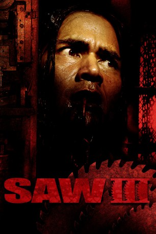
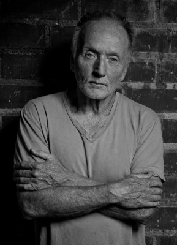
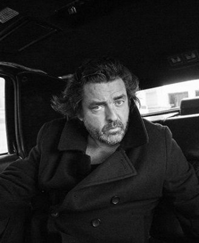
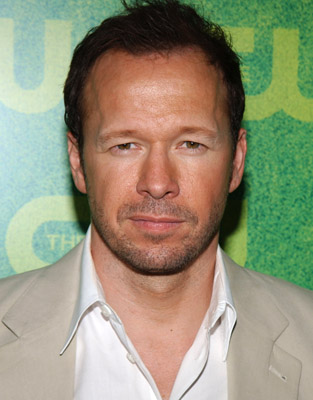
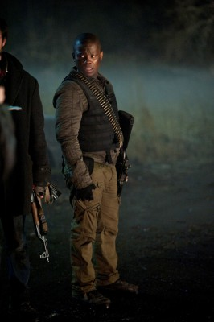
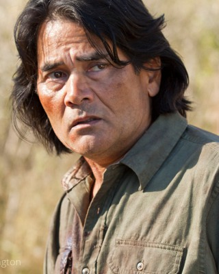
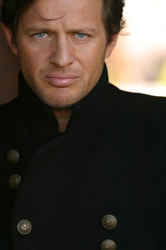
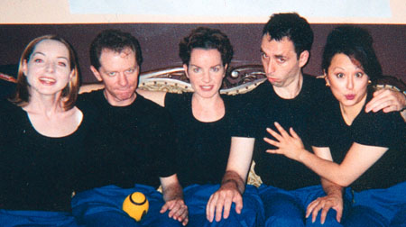

#1909 Saw 3
Alternativ: Saw III
 
 IMDB-Wertung: 6.2 / 10
IMDB-Wertung: 6.2 / 10  Metascore: 48
Metascore: 48 
Gleich zwei Rennen auf Leben und Tod laufen parallel, wenn der einst bei "Sieben" entlehnte und mittlerweile selbst zum Genre-Inventar gewordene Volkserzieher unter den Kino-Serienkillern eine Dame zum Tänzchen in der Kommandozentrale bittet und zugleich ein weiteres Opfer perfide Todesfallen sowie die eigenen Rachegelüste überwinden muss. Für spannende Kurzweil ist da ebenso gesorgt wie für haarsträubendes Splattergemetzel, nach hervorragendem Kinoabschneiden steht einer Verlängerung der Erfolgsstory wenig im Weg.
Jahr: 2006
Dauer: 108 Minuten
FSK: Not Rated
Land: USA Studio: LionsgateTonspuren:
Untertitel: Deutsch,
Auflösung: 720p (1280x688) Größe: 6717 MB
Genre: Horror, Mystery
Regisseur: Darren Lynn Bousman
Drehbuch: Leigh Whannell, James Wan, Leigh Whannell
Soundtrack: Charlie Clouser
Darsteller:
-  Tobin Bell als Jigsaw / John Kramer
 Shawnee Smith als Amanda Young
Shawnee Smith als Amanda Young-  Angus Macfadyen als Jeff
- Bahar Soomekh als Lynn Denlon
-  Donnie Wahlberg als Eric Matthews
- Dina Meyer als Kerry
- Leigh Whannell als Adam
-  Mpho Koaho als Tim
- Barry Flatman als Judge Halden
- Lyriq Bent als Rigg
-  J. LaRose als Troy
- Debra McCabe als Danica
-  Costas Mandylor als Forensic Hoffman
- Betsy Russell als Jill
-  Jane Luk als Nurse - Emergency Room
- Niamh Wilson als Corbett
- Alan Van Sprang als Chris
- Kim Roberts als Deborah
 Brian Paul als Doctor #1
Brian Paul als Doctor #1- Dylan Trowbridge als Paramedic
 Franky G als Xavier - Dead
Franky G als Xavier - Dead- Vincent Rother als SWAT Member Joe
- Nicholas Kaegi als Young Boy
- Wil Burd als Obi
- Sandy Kellerman als Additional Voice Talent
- Shauna Black als Additional Voice Talent
 Sean Sullivan als Additional Voice Talent
Sean Sullivan als Additional Voice Talent- Darrell Dennis als Additional Voice Talent
- Stefan Georgiou als Dylan
- Zoe Heath als Female Forensic
- Billy Parrott als Male Nurse
- Kelly Jones als SWAT Member Pete
- Mark Poyser als Gun Shot Victim
- Dan Sudek als Aftermath Cop
- Bill Vibert als Cop
- Larry Yachimec als Additional Voice Talent
- Christopher Marren als Additional Voice Talent
Datei: X:\FSK18-Collections\Saw\Saw 3 (2006, FSKNot Rated, 1280x688).mkv seit 01.09.2015
Festplatte: FSK18
 Es gibt insgesamt 11 Filme in der Gruppe 'FSK18-Collections\Saw'
Es gibt insgesamt 11 Filme in der Gruppe 'FSK18-Collections\Saw'